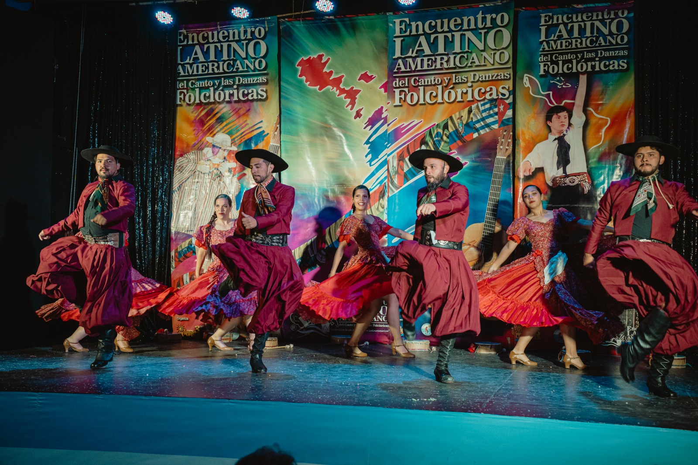

Mar del Plata ✺ 20 al 23 de noviembre ✺ Teatro Enrique Carreras ✺ Entrada libre y gratuita ✺ Hasta 30 ballets ✺ 19 ediciones desde 2010 ✺ Mar del Plata ✺ 20 al 23 de noviembre ✺ Teatro Enrique Carreras ✺ Entrada libre y gratuita ✺ Hasta 30 ballets ✺ 19 ediciones desde 2010 ✺

Argentina le cantay bailaa Latinoamérica
20º Encuentro Latinoamericano del Canto y las Danzas Folclóricas. Mar del Plata, 20 al 23 de noviembre de 2026.